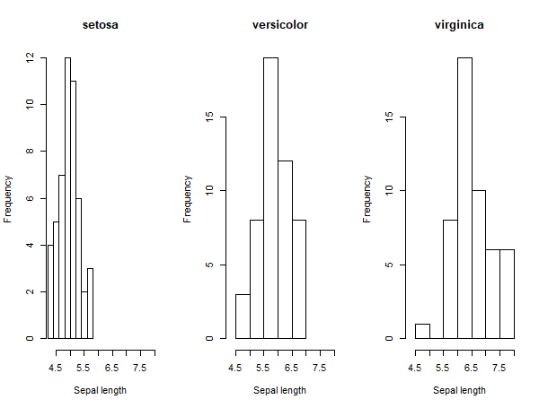
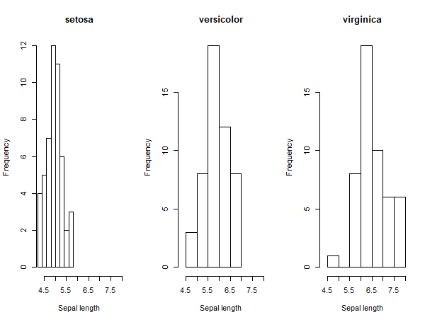
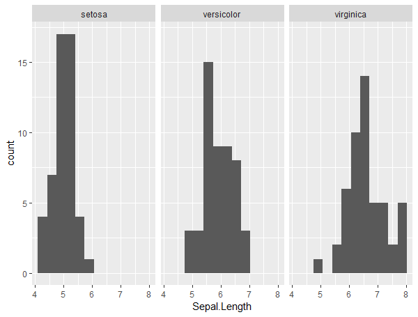
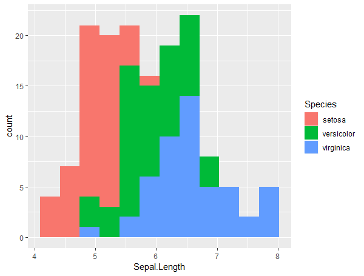
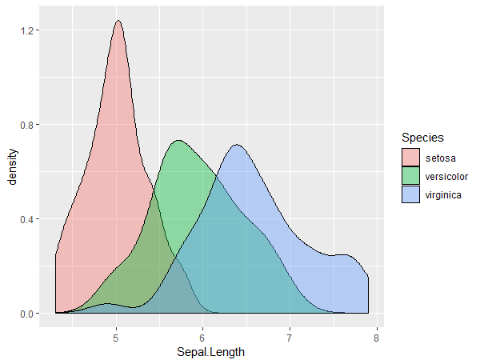

ggplot2

Created by Fernando Marques
 ## O que é ggplot2?
- É um pacote para visualização de dados
- Foi criado em 2005 por Hadley Wickham
- Implementa _Grammar of graphics_ quebrando os gráficos em componentes semânticos
- É o pacote mais utilizado de R
## Por que ggplot2?
- O output padrão já é melhor do que dos gráficos nativos
- Padronização
- Legendas e cores automáticas
- Fácil de adicionar legendas
- __Padronização__
- Mas uma imagem vale mais do que mil palavras!
- `hist(iris$Sepal.Length)`
-
- `library(ggplot2)`
- `ggplot(iris, aes(x=iris$Sepal.Length)) +
geom_histogram(bins = 8)`

## O que é ggplot2?
- É um pacote para visualização de dados
- Foi criado em 2005 por Hadley Wickham
- Implementa _Grammar of graphics_ quebrando os gráficos em componentes semânticos
- É o pacote mais utilizado de R
## Por que ggplot2?
- O output padrão já é melhor do que dos gráficos nativos
- Padronização
- Legendas e cores automáticas
- Fácil de adicionar legendas
- __Padronização__
- Mas uma imagem vale mais do que mil palavras!
- `hist(iris$Sepal.Length)`
-
- `library(ggplot2)`
- `ggplot(iris, aes(x=iris$Sepal.Length)) +
geom_histogram(bins = 8)`

par(mfrow = c(1, 3))
xlim <- range(iris$Sepal.Length)#use to ensure plots span same x
by(iris, iris$Species, function(x){
hist(x$Sepal.Length, main = x$Species[1],
xlab = "Sepal length", xlim = xlim)
})

ggplot(iris, aes(x = Sepal.Length)) +
geom_histogram(bins = 12) +
facet_wrap(~ Species)

ggplot(iris, aes(x = Sepal.Length, fill = Species)) +
geom_histogram(bins = 12)

ggplot(iris, aes(x = Sepal.Length, fill = Species)) +
geom_density(alpha = 0.4) # alpha gives transparency
library(gridExtra)
jt <- ggplot(iris, aes(x = Species, y = Sepal.Length, colour = Species)) +
geom_jitter(height = 0, width = 0.3) #height and width specify the amount of jitter
bx <- ggplot(iris, aes(x = Species, y = Sepal.Length, fill = Species)) +
geom_boxplot(notch = TRUE) #notch gives uncertainty of the median
vi <- ggplot(iris, aes(x = Species, y = Sepal.Length, fill = Species)) +
geom_violin() #density plots on their side
gridExtra::grid.arrange(jt, bx, vi)
## Aesthetics
- `aes(x= .. , y=.., color=...`
- [Parâmetros do aes](https://ggplot2.tidyverse.org/articles/ggplot2-specs.html)
- `ggplot(iris, aes(x = Sepal.Length, y= Sepal.Width, colour = Species)) +
geom_point() +
scale_color_manual(values=c("green","yellow","blue"))`
Camadas
ggplot(iris) +
geom_point(aes(x=Petal.Length, y=Petal.Width, color=Species)) +
geom_smooth(aes(x=Petal.Length, y=Petal.Width))
ggplot(iris, aes(x=Petal.Length, y=Petal.Width)) +
geom_point(aes(color=Species)) +
geom_smooth()
Rótulos
ggplot(iris, aes(x=Petal.Length, y=Petal.Width)) +
geom_point() +
labs(title="Gráfico Dispersão", x="Altura Pétala", y="Largura Pétala")
## Temas
- Serve para modificar as configurações do gráfico
- '+' theme( ... )
- `plot.title=element_text(size=30, face="bold")`
- `axis.text.x` e `axis.text.y`
- `axis.title.x`
- `plot.background = element_rect(fill = "green")`
## Facets
- `+ facet_wrap( ~ Species, ncol=3)`
## Outras Dicas
- `ggplot(df, aes(x=var, y=nums)) + geom_bar(stat = "identity") + coord_flip() + labs(title="Coordinates are flipped")`
- `+ coord_cartesian(ylim=c(0, 10000)) # zoom`
- `+ ylim(c(0, 10000)) # deleta`
- [Temas](https://ggplot2.tidyverse.org/reference/ggtheme.html)
- `ggsave("myggplot.png")`
## Links relevantes
- [Galeria de gráficos](https://www.r-graph-gallery.com/)
- [Tutorial GGPlot](http://r-statistics.co/ggplot2-Tutorial-With-R.html)
- [Tutorial Avançado GGPlot](http://r-statistics.co/Complete-Ggplot2-Tutorial-Part1-With-R-Code.html)
#